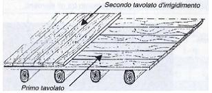
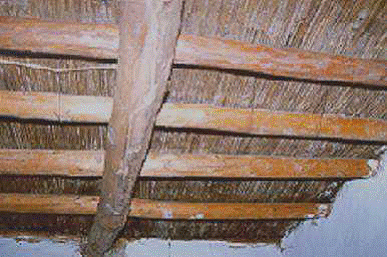
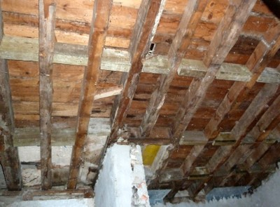

Wooden beams or trusses and joists supporting light flooring [FW1]
Wooden beams or trusses and joists, supporting light flooring, e.g. wooden planks.

Wooden beams with two perpendicular layers of wood-plank flooring, Italy (Maffei et al. 2006)

Wooden floor structure overlaid by planks and bamboo strips, Nepal (World Housing Encyclopedia Report 74)

Wooden joists supporting light flooring, Portugal (S. Brzev)